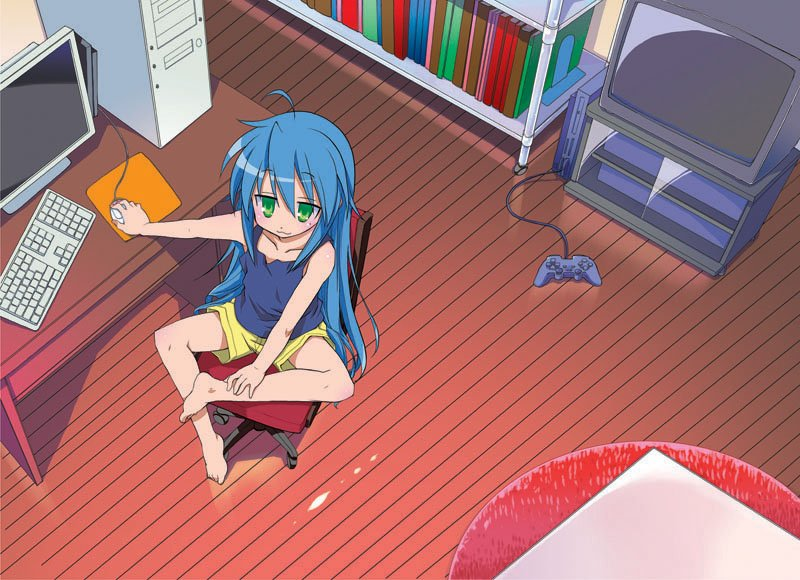

<!DOCTYPE html>
<html lang="en-US"></html>
    <head>
     <meta charset="UTF-8" />
      <meta http-equiv="X-UA-Compatible" content="IE=edge" />
      <meta name="viewport" content="width=device-width, initial-scale=1.0" />
      <link rel="stylesheet" href="./style.css">
     <title>Konata Webpage</title>
    <!-- <link rel = "stylesheet" href = "./reset.css"/>-->
     <link rel = "stylesheet" href = "./style.css"/>
</head>

<body>
    <header>
<h1>The Izumi Konata Page</h1>
<h2>泉こなたのページ</h2>
<nav>
    <ul>
        <li>
            About Konata
        </li>
        <li>
            Gallery
        </li>
        <li>
            Fun Facts
        </li>

    </ul>
</nav>
    </header>
<section>
    <article>
        <h2>About Konata</h2>
        
        <p>Konata Izumi is one of the main characters of the CGDCT Comedy style <strong>Lucky Star</strong> series. She is the daughter of 
        Soujirou Izumi (Father) and Kanata Izumi (Mother). She's played by Aya Hirano in the anime and 
        was originally created in a Japanese four-panel manga series by Kagami Yoshimizu and was serialized
         in Kadokawa Shoten's Comptiq magazine since December 2003.
        </p>
    </article>
    <article>
        <h2>Gallery</h2>
        
    </article>
    <article>
       <h2>Fun Facts</h2> 
<p>Konata loves eating Chocolate Cornets</p>

    </article>
    <article>
        
    </article>
</section>

    <footer>
<p>Links to diff sites</p>
    </footer>
</body>